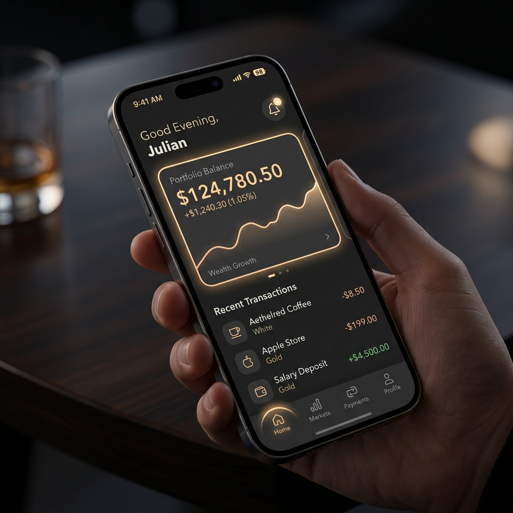
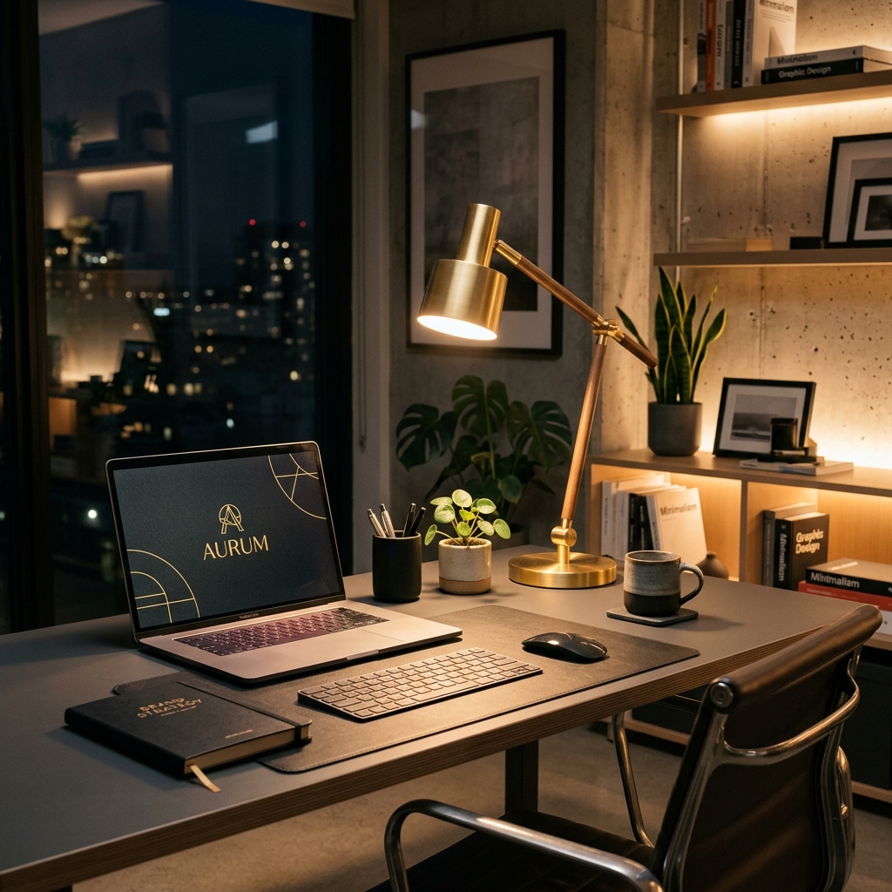

Aurum Analytics
A high-fidelity wealth management and real-time financial tracking dashboard.

Aethelred Wallet
A sleek, dark-themed iOS mobile banking application for secure micro-transactions.
Synthetix Network
An in-depth article exploring the evolution of generative deep learning models.

Aesthetic Workspace
A study on how environmental lighting and minimalism drive developer productivity.
Who Am I?
Early Life
My parents migrated to the Middle East before I was born, and after spending the first three years of my life in Bahrain, we eventually moved to the UAE. I then grew up in Dubai, where we lived a modest and unassuming life.
Growing up, my father always provided for us in a way that made it feel like we had everything we needed. I genuinely believed we were doing far better financially than we actually were. But as I got older, I slowly began to understand the reality. My father was not only supporting us, but also financially helping many other people at the same time. To this day, I still do not fully understand how he managed to carry that responsibility so consistently and so quietly.
As a child, I was extremely fascinated by electronics and circuits. I became obsessed with understanding how things worked internally. I used to beg my dad to buy me remote-controlled cars, because I wanted to take them apart the moment I got home. I would open them up just to pull out the motors, wiring, batteries, and circuit boards so I could experiment and build random electronic creations of my own.
I was especially fascinated by anything that looked futuristic or mechanical. In Grade 6, after becoming obsessed with Iron Man, I actually built my own version of an arc reactor and wore it underneath my school uniform Lol. Looking back now, it was unbelievably ridiculous. My entire chest would literally glow through my uniform throughout the school day, and somehow I thought it looked cool. I did a lot of weird things like that growing up, but in many ways, those small experiments were probably the earliest signs of my curiosity toward technology, engineering, and building things from scratch.
School
My school life felt like it existed on a spectrum.
On one end, there were the kids who got along with everyone. They were popular, social, always having fun, and involved in everything except studying. But academically, they struggled.
On the other end, there were the students who excelled in academics but barely had a social life. They were always studying, always focused, and in many ways, their loneliness felt almost contagious.
I found myself among the very few who were somewhere in the middle of that spectrum.
I was the person who got along with almost everyone. I had a lot of friends, played soccer nearly every day, and participated in almost every soccer tournament from primary school all the way through high school. School was not just about classes for me. It was where I grew up, built friendships, competed, had fun, and even met the person who would later become my wife.
But I was not just a social or athletic student either. I genuinely enjoyed learning, especially when it came to physics. I joined after-school physics lab sessions, took part in academic competitions, and found myself drawn to the subject in a way that felt natural.
Physics became the one subject where I truly excelled. It was the area where I felt I could compete with, and even outperform, the students people usually considered the “nerds.” Looking back, I think that was a big reason why I was able to connect with so many different groups of people. Through soccer and my social life, I connected with the athletic and outgoing crowd. Through physics, I connected with the academically strong students.
In a way, I lived between both worlds.
University
After completing high school in Dubai, I moved to Toronto to pursue an undergraduate degree in computer science. Looking back, that was one of the biggest turning points in my life.
I mean not just that I had started university, but I had entered a completely new world. I was in a new country, surrounded by new people, living alone for the first time, adjusting to a different culture, and experiencing weather that felt almost unreal compared to Dubai.
In my first year, I adapted fairly quickly. I made a lot of friends, and once again, soccer played a big role in helping me connect with people. At the same time, I started genuinely enjoying computer science, especially the lab sessions where we got to be hands-on with code.
In fact, during my first two weeks of university, I completed all the lab sessions for one of my courses for the entire semester. I genuinely found it fun. There was something exciting about solving problems, making things work, and seeing code come alive in front of me.
But as university went on, especially from my second year onward, I slowly began to feel disconnected from academia.
It was not that I had lost interest in learning. In fact, it was the opposite. I still loved learning. I just became increasingly frustrated with the way the university system worked. There were so many required courses that I had little to no interest in, and yet they demanded so much time, energy, and attention. The frustrating part was that they often pulled me away from the subjects I actually cared about.
Over time, that made the academic experience feel less exciting and more mechanical. I found myself sitting through courses that felt boring, forced, and disconnected from the things I genuinely wanted to explore. I started to feel like university was not always designed for curiosity, rather, it was designed for structure, requirements, deadlines, and checkboxes.
That is when I began leaning more into self-study.
I realized I enjoyed learning far more when I could follow my own curiosity. I started exploring topics that felt more alive to me, especially areas connected to technology, artificial intelligence, and how software could be used to build real things. I was studying because I wanted to understand where technology was going.
I even stumbled upon Google’s “Attention is all you need” and touched upon the transformer model (which is essentially how LLMs work) before ChatGPT had launched and before most people, if any, were really talking about them.
So while I became less connected to traditional academia, I became even more connected to learning itself. I just preferred learning in a way that felt practical, self-directed, and genuinely interesting.
AI
So.. I’m officially a Computer Science Graduate! ..Now what? Well.. graduating in the summer of 2023 was a brutal setup, and the data from the National Association of Colleges and Employers shows exactly why. Back in late 2022, companies were projecting a massive 15% increase in new grad hiring. By the time we actually walked the stage in spring 2023, that projected growth crashed down to just 3.9%. For those of us in tech, it was even worse. The information sector flipped from a massive 87% expected hiring boom to an actual 17% cut in entry-level roles. It was the ultimate rug pull right at the finish line.
That is when I ended up picking up a gig on Scale AI’s Outlier platform to do AI data training. Talk about a reality check. After years of grinding through a computer science degree, my new job was basically babysitting an AI and explaining why its math was wrong. I was essentially training the very technology that will probably take my future job anyway. But honestly, I could not complain because the gig actually paid surprisingly well. The money was so solid that arguing with a computer paid better than most actual entry-level roles, which at least kept my bank account happy while I figured out my next move.
Sales Sales Sales
After about a year, the AI data training gig started to lose its steam. The cash was decent for a temporary setup, but it was nowhere near enough to actually build a real life on, and I realized my long-term career options were looking pretty mundane.
That is when a close friend of mine stepped in. He was working for Telus doing door to door sales, pitching everything from mobile plans to full home security systems. We were talking about it, and he told me I would be great at it because I am naturally social. He promised the money would be surprisingly good if I just went all out. So, I decided to give it a shot, and it actually went well.
Now, knocking on strangers' doors is definitely not for everyone. I had my fair share of doors slammed right in my face, which regularly sent me straight into a mini early adulthood crisis right there on the pavement. But every single day on that grind forced me to learn some of life’s most essential skills. I learned how to shake off rejection without taking it personally, how to read a person instantly, and how to communicate clearly and confidently with just about anyone.
Fast forward about eight months, and the company decided to expand their inside sales division since that channel was bringing in serious numbers. They were looking for new members for the team, so they moved me off the streets and onto the phones. That is where I am currently at, marking a full year in the sales world.
I will be the first to admit that a sales job looks pretty ugly on the outside, but I am unbelievably grateful I made this decision. I often think about what would have happened if I had said no. It would not have been the end of the world, and it definitely would have been a lot more comfortable. But the sheer mindset shift I got from sales is hard to even describe. I genuinely feel like I can do anything in the world now, and this grind will be the backbone of every single thing I build in the future.
Let's Create Together
Have a project in mind, an article concept to discuss, or just want to connect? Drop a message below.